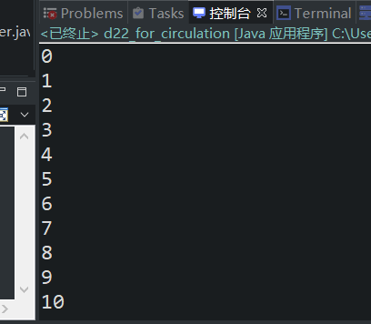

原文连接:https://www.cnblogs.com/ruigege0000/p/11427465.html
一、循环结构
在程序当中总有一些需要反复的/重复的执行的代码，假设没有循环结构，那么这段需要重复执行的代码自然式子最需要重复编写的，代码无法得到重复使用，所以多数编程语言都是支持循环结构的，将来把需要反复执行的代码片段放到“循环体”，再联合“计数器”，共同控制这段需要反复执行的代码。
1.基本上所有的编程语言支持的循环包括三种：
（1）for循环；（2）while循环；（3）do.....while循环。
2.当前示例主要讲解for循环，for循环的语法结构是什么样的呢：
语法结构
for （初始表达式；布尔表达式；更新表达式）{
//是需要重复执行的代码片段【循环体：由java语句构成】
}
3.for循环的执行过程/执行原理
（1）初始化表达式，布尔表达式，更新表达式都不是必须要写的，但是两个分号是必循的。
（2）初始化表达式是最先执行的，并且在整个for循环之中只执行一次
（3）布尔表达式必须是true/false,不能是其他值。
（4）for的执行过程
i.先执行初始化表达式，并且该表达式只会执行一次
ii.判断布尔表达式的结果是true还是false
iii.布尔表达式为真，执行循环体，执行更新表达式，再次判断布尔表达式。
iv.布尔表达式为假，循环结束。
4.例子：
//需求：输出数字1~10
for (int i = 0;i<=10;++i) {//for循环中之中的变量i的作用域仅限于当前for循环之中使用
System.out.println(i);
}

5.循环嵌套
内层循环中的变量名和外层循环中的变量名不能重名。
挺简单的不举例了。
三、源码：
d22_for_circulation.java
地址：
https://github.com/ruigege66/Java/blob/master/d22_for_circulation.java
2.CSDN：https://blog.csdn.net/weixin_44630050（心悦君兮君不知-睿）
3.博客园：https://www.cnblogs.com/ruigege0000/
4.欢迎关注微信公众号：傅里叶变换，后台回复”礼包“，获取大数据学习资料